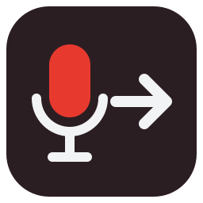

ApexCue
放送・イベント・舞台の本番で、キューを確実に出し、音声素材を扱うためのアプリをつくっています（Mac・Windows）。
アプリ
名前を押すと、各アプリのページ（機能・サポート・プライバシーポリシー）へ進みます。
-
 Mac App Store 配信準備中
Mac App Store 配信準備中
-
 配信準備中
配信準備中PonDashi Player Audio PRO
PonDashi Player Audio に、LTC（タイムコード）の入力・出力を加えた上位版。
PonDashi Player Audio PRO を見る -
配信準備中
PonDashi Player Video
映像・静止画・音声のポン出しアプリ（1 系統）。
-
配信準備中
PonDashi Player Video Dual
映像・静止画・音声のポン出しアプリ（2 系統）。Player 1 / Player 2 を同時に扱い、NEXT で下見してから送出。
PonDashi Player Video Dual を見る -
 配信準備中
配信準備中ApexCue Transfer
Q-SYS® Core 対応の音声転送アプリ。Core 内の音声ファイルを試聴・簡易編集（IN/OUT・ゲイン・フェード・ノーマライズ）し、NAS（SMB）・FTP・デスクトップへコピーして転送。
ApexCue Transfer を見る -

配信準備中ナレーション収録転送アプリ
ApexCue Transfer をもとにした収録版。ナレーションをその場で録音し、簡易編集して NAS（SMB）・FTP・デスクトップへそのまま転送。
Q-SYS® は QSC, LLC の米国およびその他の国における登録商標です。